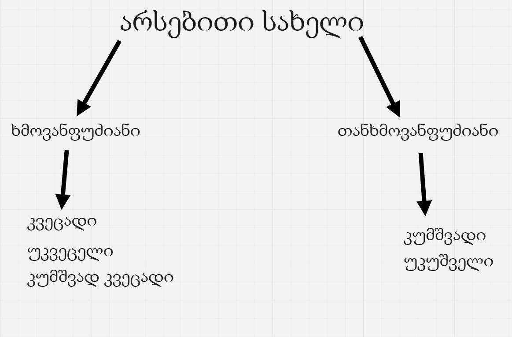

დავიწყოთ გრამატიკით
არსებითი სახელი

კვეცადი
ქართულში იკვეცება ა_სა და ე_ზე დაბოლოვედული არსებითი
სახელები და ღვინო.
კვეცა ხდება ორ ბრუნვაში ნათესაობითში და მოქმედებითში.
ე_ზე დაბოლოვებული უცხო ენიდან შემოსული სიტყვები არ იკვეცება.
(კაფე,ჟელე,ტირე,კუპე,ატელიე,კაშნე).
არ იკვეცება ა_ზე დაბოლოვებული კნინობით-
ალერსობითი და ტოროლას ტიპის არსებითი სახელები.
(თაგუნია,ჩიტუნია,დათუნია,ბიცოლა,
კოდალა,ტოროლა,დედოფალა).
ნათესაობითიწარმომავლობის არს.სახელები
(დედა,მამა,ბებია,ბაბუა) ზოგჯერიკვეცება
ზოგჯერ
არა.იკვეცება მაშინ,როცა საზოგადო არს.სახელის ფუნქცია აქვს.
(დედია ამაგი, მამის დარიგება).არ იკვეცება მაშინ.როცა
კონკრეტული არს.სახელის ფუნქცია აქვს
(დედას ოთახში შევედი, მამას სათვალე მოვირგე)
დაიმახსოვრეთ!!!
,, ლიმონის და არა ლიმნის"
,,ტაქსიში ჩავჯექი და არა ტაქსში"
კუმშვად კვეცადი
კუმშვად კვეცადი ეწოდება ისეთ არს.სახელს,
რომელიც ერთდროულად იკვეცება და იკუმშება
(პეპელა,ბეგარა,ქვეყანა,ქარხანა). კუმშვა ხდება სამ ბრუნვაში
(ნათესაობითში,მოქმედებითში,ვითრებითში).
ასევე კუმშვად კვეცადია ბიბლიური საჭმელი პერპერა.
კუმშვა
იკუმშება ა,ე და ო ხმოვანი,და კუმშვა ხდება სამ ბრუნვაში
(ნათესაობითში,მოქმედებითში და ვითრებითში).
ა და ე ხმოვანი კუმშვის დროს სრულიად
ქრება და ო ზოგჯერ ვ-დ გადაიქცევა და ზოგჯერ ქრება.
თუ თვალი,წელი ადამიანის ორგანოს აღნიშნავს არ იკუმშება.
მაგ: თვალის ტკივილი, წელის ტკივილი
სხვა შემთხვევაში ყოველთვის იკუმშება.
ადამიანის საკუთარი სახელის ბრუნება
ადამიანის საკუთარი სახელი ბრუნებისას აჟღავნებს სამ თავისებურებას
არ იკვეცება და არ იკუმშება
არ აქვს მრავლობითი რიცხვი
წოდებით ბრუნვაში არ დაირთავს
ბრუნვის ნიშანს
სახ: თამარი
მოთხ: თამარმა
მიც: თამარს
ნათ: თამარის
მოქ: თამარით
ვით: თამარად
წოდ: თამარ
ადამიანის გვარების ბრუნება
შვილზე დაბოლოვებული გვარი ზუსტად ისეთ
იბრუნის,როგორც საზოგადო სახალი (შვილი).
სახ: ჯავახიშვილი
მოთხ: ჯავახიშვილმა
მიც: ჯავახიშვილს
ნათ: ჯავახიშვილის
მოქ: ჯავახიშვილით
ვით: ჯავახიშვილად
წოდ: ჯავახიშვილო